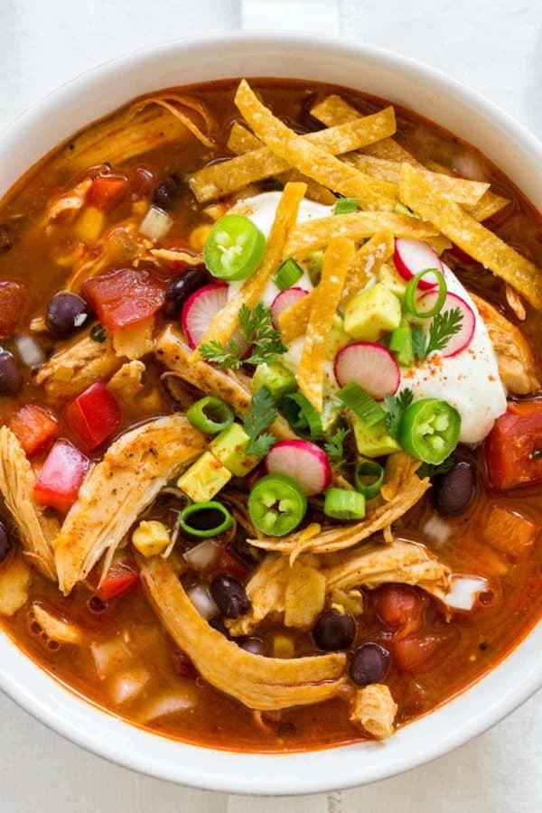

Chicken Tortilla Soup

Description:
Chicken tortilla soup from scratch on the stovetop in just 40 minutes! Tender sauteed chicken breast shredded and combined with bold seasonings, spicy chilis, fire-roasted tomatoes, and corn tortillas to create a hearty and satisfying dish.
Ingredients:
- 1 ½ pounds boneless skinless chicken breast, pounded to ¾-inch thick
- 1 teaspoon kosher salt, plus more as needed for seasoning
- 1 teaspoon paprika, sweet or smoked, plus more as needed for seasoning
- black pepper, as needed for seasoning
- 2 tablespoons olive oil, divided
- 1 cup chopped white onion, ¼-inch dice
- 1 tablespoon minced garlic
- 1 tablespoon minced garlic
- 1 tablespoon minced garlic
- 1 tablespoon minced garlic
- 2 teaspoons cumin
- 1 teaspoon coriander
- 1 teaspoon chili powder
- 1 tablespoon chopped chipotle chilis in adobo sauce
- 1 tablespoon minced jalapenos
- ¼ cup tomato paste
- ¾ cup chopped red bell pepper, ¼-inch dice
- 1 cup corn kernels, fresh, canned or frozen
- 1 cup black beans, canned, rinsed and drained
- 14.5 ounce canned diced fire roasted tomatoes, plus juice
- 5 cups unsalted chicken stock
- 1 ½ teaspoons dried oregano
- 1 cup sliced corn tortilla strips, ¼-inch thick, 2-inch long strips
- 1 tablespoon lime juice
- ¼ cup cilantro leaves, for garnish
Steps:
- Lightly season chicken breasts on both sides with salt, pepper, and paprika.
- Heat large saute pan or dutch oven over medium heat.
- Add 1 tablespoon olive oil, once hot cook the chicken on one side until lightly browned on the surface, 6 to 7 minutes.
- Flip and cook on the other side until the internal temperature reaches 160°F (71°C), about 5 to 6 minutes.
- Transfer chicken to a clean plate and shred into smaller pieces once cooled, reserve.
- In the same pot heat over medium heat, add in 1 tablespoon of olive oil.
- Once the oil is hot, add in the onions and garlic, saute for 1 minute.
- Add in the cumin, coriander, chili powder, and 1 teaspoon paprika, continuously stirring for 30 seconds.
- Add chopped chipotle chilis and jalapenos, saute for 1 minute.
- Add in tomato paste and saute for 1 minute.
- Add in bell pepper and corn, saute for 1 minute.
- Add in the black beans, fire-roasted tomatoes, chicken stock, oregano, salt, 1 cup tortilla strips, and shredded chicken, stir to combine.
- Bring to a boil and then reduce to a simmer, cook until tortillas are softened about 15 minutes.
- Stir in lime juice and cilantro leaves, taste, and adjust seasoning with salt and pepper.
- Serve the soup with desired toppings.